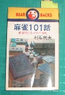

麻雀が世界的にブームになったのは1920年代。そのきっかけになったのが、当時、上海租界で麻雀を楽しんでいた英米人であった。彼らは上海で麻雀を楽しむとともに、本国へも紹介した。そしてアメリカ、イギリスでブームを巻き起こし、麻雀が世界的ゲームとして普及することとなった。
そのなかで太平洋航路を股に掛けて活躍したアメリカ人商社マン、JOSEPH P．BUBCOCK(ジョセフ・P・バブコック)の「Mahjongg,The Fascinating chinese Game（SHANGHAI/1920刊）」は、当時、上海租界で行われていた麻雀ルールを知る上で非常に貴重な資料である。その抄訳が「麻雀１０１話（村石利夫・ｓ52/9光風社）」に掲載されている。そこでその抄訳の抄訳(^-^；をup することにした。※近代麻雀（s49年４月号〜ｓ50年３月号）に村石氏により全文訳が掲載されている。

１．チーポンした牌はプレーヤーの左側に副露していた。
１．サイド計算があった。
１．二千点持ち。
１．満貫は900点（当時は常に３人払いなので300点オール）。持ち点の４割であるから、現在の点数に換算すると12000点くらい。
１．地和は親の第１打牌による栄和。
１．まだカンという表現がなく、すべてポンと言っていた。
１．１２２２では１でアガっても単騎にならず、３でアガっても辺張にならなかった。１３３３でも同様。
１．小四喜は、自風が暗刻でないと役満にならなかった。
１．アガリ役
10符役 搶槓、海底撈月、嶺上開花、平和。
一 翻 対々和、三暗刻、混一色。
三 翻 清一色、字一色。
100点all 人和（注釈が無いので判然としないが、たぶん現在の牌底放銃）。
150点all 地和、七対子。
満 貫 天和、四喜和 九連宝灯 国士無双 大三元 四暗刻（単騎ツモのみ） 混老頭（採用していなかったところもある）。
|